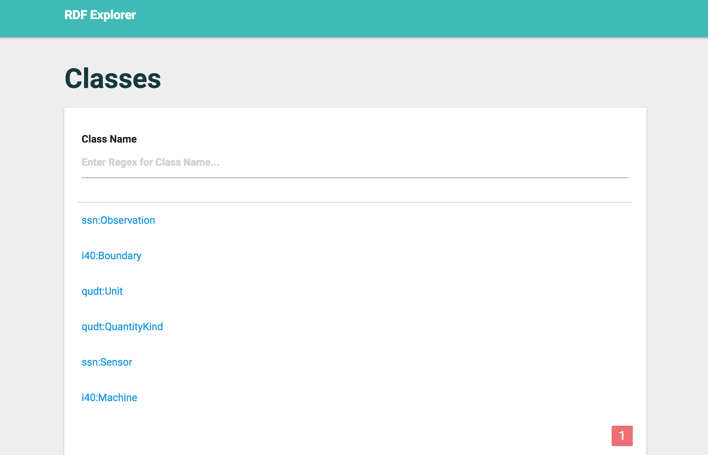
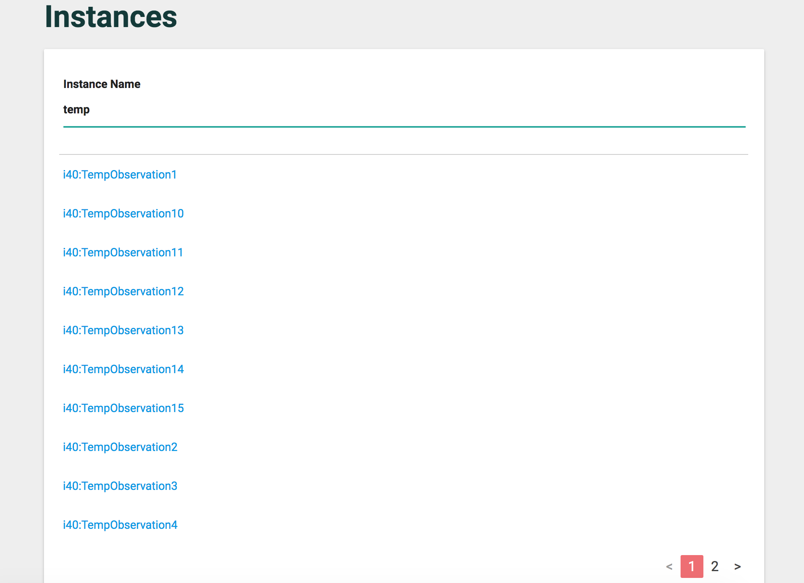
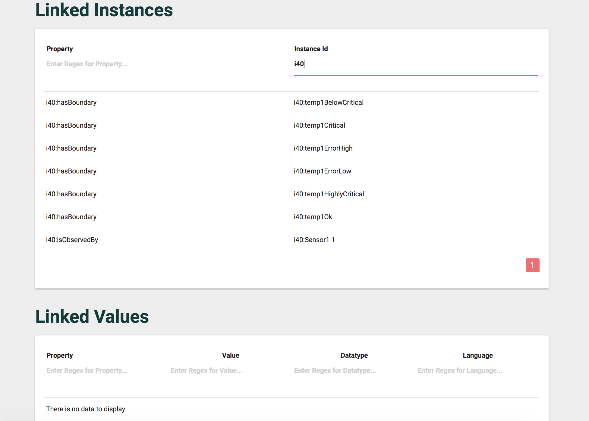
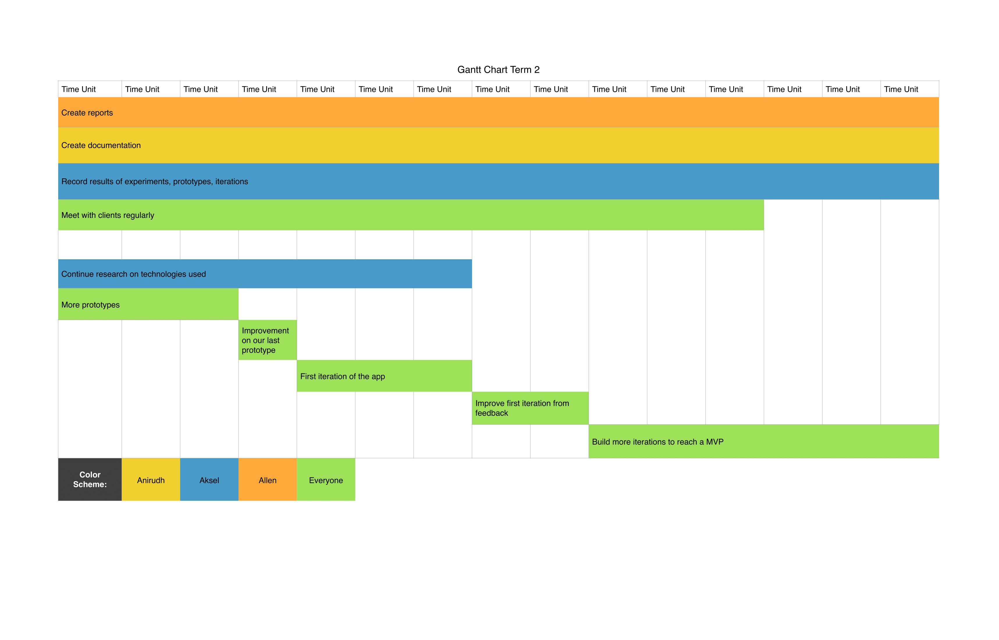

TODO
User manual Teach users how to use your application System manual Teach your client how to deploy your project after getting your code Feedback from your client Arrange a meeting to demonstrate your final prototype before April 26 to your client to get his written feedback (e.g. email). Gantt Chart for term 1 and term 2 Bi-weekly reports Meeting with your clients A table to include meeting date, meeting minutes, topic (1-2 sentences)
System Manual
Develop and Contribute
This file helps you get up to date with the project by explaining how the code works, where to go to add/modify specific features etc…
We assume the prerequisites are already met.
Refer to README.md to know how to have a local working copy of the project if not already.
Set up
1. Clone the Project
2. Run npm install
3. The GUI currently fetches the data from the deployed API with the test database.
To change the URL for the API, go to client/js/constants.js and change the APIURL variable.
4. Run npm start, which will start the GUI on port 3000. To change the port, you can edit, devServer.js.
Bundling
Install webpack globally using sudo npm install -g webpack.
Then run sh build.sh to create a dist folder and a bundle.js file which contains the transpiled
React code.
Built With
The main technologies used to build this are React and D3.js
Testing
Once you contributed, added or modified something, you can test your changes.
The command npm test will run a test suite with Jest.
Note: We use react-bootstrap-table for our tables and our filter, that have been tested already.
Project Structure
This is our project’s structure:
├── build.sh
├── devServer.js
├── webpack.config.dev.js
├── webpack.config.prod.js
├── package.json
├── node_modules
├── test
| └── load_test.py
└── client
├── app.js
├── css
| └── style.css
├── js
| └── constants.js
└── components
├── Main.js
├── Header.js
├── Breadcrumbs.js
├── ClassList.js
├── InstanceList.js
├── Instance.js
├── LinkedInstancesTable.js
├── LinkedValuesTable.js
├── InfoBar.js
└── Links.js
The Source Code
build.sh is ran when building the project
devServer.js is the first file that runs when calling npm start
webpack.config.dev.js and webpack.config.prod.js are fed to WebPack (when the app is in development or production respectively). They are configuration files.
package.json contains meta-data about our app. It includes a list of dependencies that are installed when running npm install
node_modules contains all the dependencies and modules used by the App
test/
load_test.py creates a server at port 5000, with an arbitrary number of RDF entities (ie: a million), to perform load testing and see how our GUI reacts to huge datasets
client/
app.js
components/ contains all our React components
Main.js is the main component in which everything happens
Header.js manages the header
Breadcrumbs.js manages the breadcrumbs
ClassList.js shows the list of all classes (it’s the first page that is shown)
InstanceList.js shows the list of all instances of a certain class (when you click on a class in ClassList.js for example)
Instance.js shows a graph, along with information about a particular instance of some class
LinkedInstancesTable.js shows all the instances related to the instance currently inspected (this component is a child of Instance.js)
LinkedValuesTable.js shows all the values related to the instance currently inspected (this component is a child of Instance.js)
InfoBar.js shows additional information about a certain node of the graph when clicked on
Links.js
css/ contains some simple styling
js/ contains constants we re-use in several places
SDK collaboration opportunities for further development
User Documentation
RDF Explorer - Bosch
RDF explorer is an web-based graphical user interface using a REST-API which supports engineers to traverse huge RDF datasets. </br>
This tool is easy to use: to successfully uncover useful insights and traverse the database, engineers do not need to know anything about RDF or SPARQL queries. Our RDF explorer also has features that are absent from other similar tools.
Our main features:
-
Our tool supports filtering and search (with the help of search bars for example).
-
Our tool has a navigation system that enables someone to traverse a database in a straightforward way, without getting lost (with the use of breadcrumbs for example).
-
Our tool gives ways of visualizing data and instances in a meaningful way (with the help of graphs).
-
Our tool gives insights on how data, instances, classes, nodes, are related and connected.
Authors (group 26)
Anirudh Pillai
Aksel Cakmak
Xiaofeng Fu
Getting Started
These instructions will get you a copy of the project up and running on your local machine for development and testing purposes. See deployment for notes on how to deploy the project on a live system.
Prerequisites
What things you need to install the software and how to install them.
To use this Web-App, you first need to have Node on your system.
This tool can interface with any REST-API that implements some sort of RDF-graph. The URL of the API is http://euve251515.serverprofi24.de:9090/rest-api-1.2/uclixn for now. </br>
To use a different API, change the URL located in client/js/constants.js.
Installing
A step by step series of examples that tell you how to get a development env running.
First git clone https://github.com/anirudhpillai/rdf-explorer our project, then navigate to the .../rdf-explorer/GUI folder.
Then run npm install to install dependencies.
Then run npm start and open localhost:3000 in your browser.
NB: It is important that you have the latest versions of Node and npm installed. You will get errors otherwise. You can check that with npm -v (version 3 or higher) and node -v (version 6 or higher).
Development/Contributing/Project Documentation
Please read DEVELOPMENT.md for details of how the code works and how to contribute.
Features:
When first arriving on localhost:3000, you should see something like this:

The main page links to all the classes that exist in the RDF-database. you can sort them through regexpressions.
Clicking on a class brings you to a page showing you all its instances. Again, you can sort those instances through regex.

Clicking on an instance shows you additional information on it. Namely, you can see a graph showing all of that instance’s relations with classes, properties, and other instances.
Clicking on such a node brings additional information.

Scrolling down, you can see two tables (that can be sorted and filtered), showing a list of all related instances and a list of all related values respectively.

You can click on the breadcrumbs to go back to a previous state in the graph traversal.
Term 2
Term 1
Bi-weekly Reports
Bi-weekly Report 1
Bi-weekly Report 2
Bi-weekly Report 3
Bi-weekly Report 4
Links
Team Website Repository
Project Repository
Plans for Term 2

This Gantt chart shows how we hope the second term will be organised.
We should point that like any plan, this might be changed according to the needs of the moment.
This provides a framework of what we hope to do, for how long, and in what order.
The time units are arbitrary: They show how much time we predict we'll spend on each task proportionally.
This distinction is important: This doesn't tell us exactly how many weeks a task will take, but how long
it is compared to other tasks. We think this variation is more adapted to the nature of our project
because of the presence of several uncertainties (After how many iterations will we have something satisfiable?
How many unexpected hurdles will there be?).
We will start by implementing our final prototype. We will organise the prototype into Redux and React components
and go on to implement them. We will follow a test driven approach and will integrate Circle CI to run our
tests whenever we push our code to the master branch.